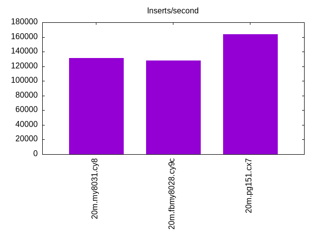
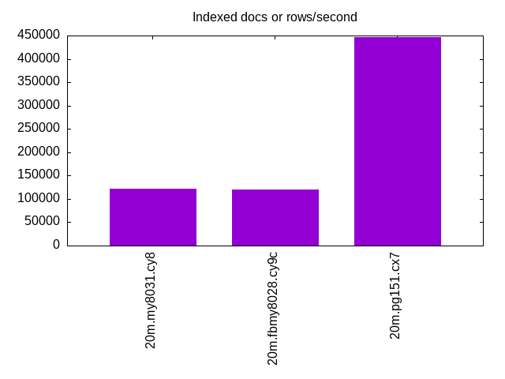
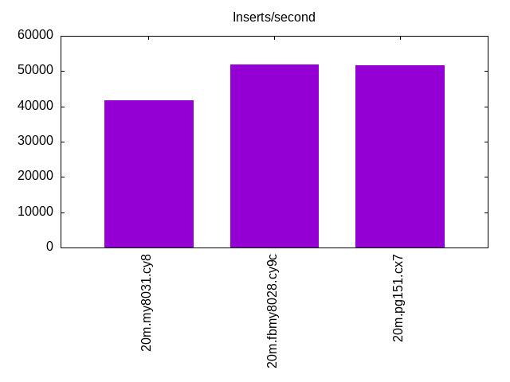
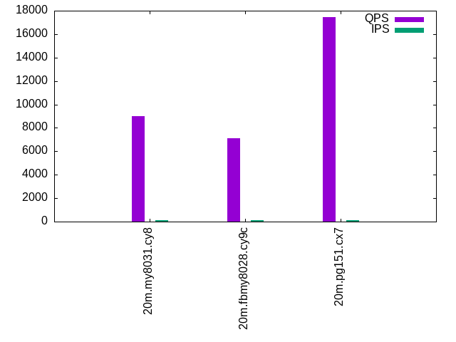
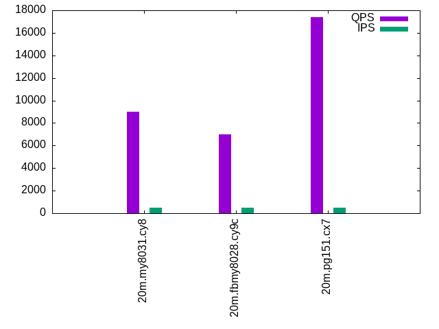
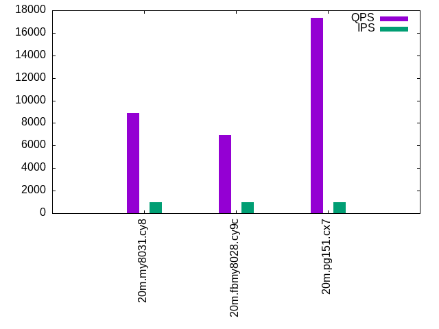

This is a report for the insert benchmark with 20M docs and 1 client(s). It is generated by scripts (bash, awk, sed) and Tufte might not be impressed. An overview of the insert benchmark is here and a short update is here. Below, by DBMS, I mean DBMS+version.config. An example is my8020.c10b40 where my means MySQL, 8020 is version 8.0.20 and c10b40 is the name for the configuration file.
The test server is an c6i.2xl with 4 cores, 4 HW threads (hyperthread disabled), 16G RAM and io2 storage (256G, 10K IOPs). The benchmark was run with 1 clients and there was 1 or 2 connections per client (1 for queries, 1 for inserts). The benchmark loads 20M rows without secondary indexes, creates secondary indexes, loads another 20M rows then does 3 read+write tests for one hour each that do queries as fast as possible with 100, 500 and then 1000 writes/second/client concurrent with the queries. The database is cached by the storage engine and the only IO is for writes. Clients and the DBMS share one server. The per-database configs are in the per-database subdirectories here.
The tested DBMS are:
The numbers are inserts/s for l.i0 and l.i1, indexed docs (or rows) /s for l.x and queries/s for q*.2. The values are the average rate over the entire test for inserts (IPS) and queries (QPS). The range of values for IPS and QPS is split into 3 parts: bottom 25%, middle 50%, top 25%. Values in the bottom 25% have a red background, values in the top 25% have a green background and values in the middle have no color. A gray background is used for values that can be ignored because the DBMS did not sustain the target insert rate. Red backgrounds are not used when the minimum value is within 80% of the max value.
| dbms | l.i0 | l.x | l.i1 | q100.1 | q500.1 | q1000.1 |
|---|---|---|---|---|---|---|
| 20m.my8031.cy8 | 131579 | 121084 | 41841 | 8979 | 8986 | 8891 |
| 20m.fbmy8028.cy9c | 128205 | 119643 | 51948 | 7119 | 6986 | 6954 |
| 20m.pg151.cx7 | 163934 | 446667 | 51680 | 17427 | 17368 | 17325 |
This lists the average rate of inserts/s for the tests that do inserts concurrent with queries. For such tests the query rate is listed in the table above. The read+write tests are setup so that the insert rate should match the target rate every second. Cells that are not at least 95% of the target have a red background to indicate a failure to satisfy the target.
| dbms | q100.1 | q500.1 | q1000.1 |
|---|---|---|---|
| my8031.cy8 | 100 | 499 | 999 |
| fbmy8028.cy9c | 100 | 500 | 999 |
| pg151.cx7 | 100 | 500 | 999 |
| target | 100 | 500 | 1000 |
l.i0: load without secondary indexes. Graphs for performance per 1-second interval are here.
Average throughput:
Insert response time histogram: each cell has the percentage of responses that take <= the time in the header and max is the max response time in seconds. For the max column values in the top 25% of the range have a red background and in the bottom 25% of the range have a green background. The red background is not used when the min value is within 80% of the max value.
| dbms | 256us | 1ms | 4ms | 16ms | 64ms | 256ms | 1s | 4s | 16s | gt | max |
|---|---|---|---|---|---|---|---|---|---|---|---|
| my8031.cy8 | 99.623 | 0.189 | 0.184 | 0.004 | 0.001 | 0.096 | |||||
| fbmy8028.cy9c | 98.772 | 1.213 | 0.011 | 0.004 | 0.057 | ||||||
| pg151.cx7 | 99.909 | 0.091 | 0.002 |
Performance metrics for the DBMS listed above. Some are normalized by throughput, others are not. Legend for results is here.
ips qps rps rmbps wps wmbps rpq rkbpq wpi wkbpi csps cpups cspq cpupq dbgb1 dbgb2 rss maxop p50 p99 tag 131579 0 0 0.0 670.0 45.1 0.000 0.000 0.005 0.351 14734 36.4 0.112 11 1.3 3.8 2.5 0.096 132059 115277 20m.my8031.cy8 128205 0 0 0.0 123.5 25.1 0.000 0.000 0.001 0.201 13107 39.3 0.102 12 0.7 1.9 0.6 0.057 129897 118573 20m.fbmy8028.cy9c 163934 0 0 0.0 299.5 68.9 0.000 0.000 0.002 0.431 18896 39.9 0.115 10 1.9 5.2 0.0 0.002 164125 154439 20m.pg151.cx7
l.x: create secondary indexes.
Average throughput:
Performance metrics for the DBMS listed above. Some are normalized by throughput, others are not. Legend for results is here.
ips qps rps rmbps wps wmbps rpq rkbpq wpi wkbpi csps cpups cspq cpupq dbgb1 dbgb2 rss maxop p50 p99 tag 121084 0 626 42.0 2514.1 128.4 0.005 0.355 0.021 1.086 8547 43.4 0.071 14 3.0 5.4 3.9 0.009 NA NA 20m.my8031.cy8 119643 0 0 0.0 79.7 18.0 0.000 0.000 0.001 0.154 585 24.5 0.005 8 1.4 2.7 1.9 0.002 NA NA 20m.fbmy8028.cy9c 446667 0 0 0.0 342.8 83.3 0.000 0.000 0.001 0.191 1311 24.0 0.003 2 3.7 8.6 0.0 0.001 NA NA 20m.pg151.cx7
l.i1: continue load after secondary indexes created. Graphs for performance per 1-second interval are here.
Average throughput:
Insert response time histogram: each cell has the percentage of responses that take <= the time in the header and max is the max response time in seconds. For the max column values in the top 25% of the range have a red background and in the bottom 25% of the range have a green background. The red background is not used when the min value is within 80% of the max value.
| dbms | 256us | 1ms | 4ms | 16ms | 64ms | 256ms | 1s | 4s | 16s | gt | max |
|---|---|---|---|---|---|---|---|---|---|---|---|
| my8031.cy8 | 1.913 | 97.581 | 0.357 | 0.104 | 0.043 | 0.001 | 0.361 | ||||
| fbmy8028.cy9c | 81.800 | 18.157 | 0.040 | 0.003 | 0.034 | ||||||
| pg151.cx7 | 84.478 | 15.502 | 0.009 | 0.011 | 0.049 |
Performance metrics for the DBMS listed above. Some are normalized by throughput, others are not. Legend for results is here.
ips qps rps rmbps wps wmbps rpq rkbpq wpi wkbpi csps cpups cspq cpupq dbgb1 dbgb2 rss maxop p50 p99 tag 41841 0 194 3.0 2786.3 94.8 0.005 0.074 0.067 2.321 17690 28.5 0.423 27 7.8 10.3 8.3 0.361 45751 499 20m.my8031.cy8 51948 0 16 1.9 259.4 58.7 0.000 0.038 0.005 1.158 10698 49.5 0.206 38 2.8 4.7 2.6 0.034 51459 43654 20m.fbmy8028.cy9c 51680 0 0 0.0 370.4 84.5 0.000 0.000 0.007 1.674 12839 30.7 0.248 24 8.2 23.9 0.0 0.049 52494 30068 20m.pg151.cx7
q100.1: range queries with 100 insert/s per client. Graphs for performance per 1-second interval are here.
Average throughput:
Query response time histogram: each cell has the percentage of responses that take <= the time in the header and max is the max response time in seconds. For max values in the top 25% of the range have a red background and in the bottom 25% of the range have a green background. The red background is not used when the min value is within 80% of the max value.
| dbms | 256us | 1ms | 4ms | 16ms | 64ms | 256ms | 1s | 4s | 16s | gt | max |
|---|---|---|---|---|---|---|---|---|---|---|---|
| my8031.cy8 | 99.999 | 0.001 | nonzero | nonzero | 0.008 | ||||||
| fbmy8028.cy9c | 99.996 | 0.004 | nonzero | 0.003 | |||||||
| pg151.cx7 | 99.999 | 0.001 | nonzero | nonzero | 0.004 |
Insert response time histogram: each cell has the percentage of responses that take <= the time in the header and max is the max response time in seconds. For max values in the top 25% of the range have a red background and in the bottom 25% of the range have a green background. The red background is not used when the min value is within 80% of the max value.
| dbms | 256us | 1ms | 4ms | 16ms | 64ms | 256ms | 1s | 4s | 16s | gt | max |
|---|---|---|---|---|---|---|---|---|---|---|---|
| my8031.cy8 | 99.306 | 0.694 | 0.010 | ||||||||
| fbmy8028.cy9c | 8.083 | 91.917 | 0.002 | ||||||||
| pg151.cx7 | 99.986 | 0.014 | 0.004 |
Performance metrics for the DBMS listed above. Some are normalized by throughput, others are not. Legend for results is here.
ips qps rps rmbps wps wmbps rpq rkbpq wpi wkbpi csps cpups cspq cpupq dbgb1 dbgb2 rss maxop p50 p99 tag 100 8979 0 0.0 125.0 3.0 0.000 0.000 1.252 31.199 35039 24.5 3.902 109 8.0 10.5 8.5 0.008 8982 8809 20m.my8031.cy8 100 7119 0 0.0 3.3 0.1 0.000 0.000 0.033 0.586 27428 24.9 3.853 140 2.8 4.8 4.3 0.003 7098 6793 20m.fbmy8028.cy9c 100 17427 0 0.0 187.1 4.8 0.000 0.000 1.873 49.016 66695 23.0 3.827 53 8.2 18.7 0.0 0.004 17426 17246 20m.pg151.cx7
q500.1: range queries with 500 insert/s per client. Graphs for performance per 1-second interval are here.
Average throughput:
Query response time histogram: each cell has the percentage of responses that take <= the time in the header and max is the max response time in seconds. For max values in the top 25% of the range have a red background and in the bottom 25% of the range have a green background. The red background is not used when the min value is within 80% of the max value.
| dbms | 256us | 1ms | 4ms | 16ms | 64ms | 256ms | 1s | 4s | 16s | gt | max |
|---|---|---|---|---|---|---|---|---|---|---|---|
| my8031.cy8 | 99.996 | 0.002 | 0.002 | nonzero | 0.008 | ||||||
| fbmy8028.cy9c | 99.991 | 0.008 | 0.002 | nonzero | 0.006 | ||||||
| pg151.cx7 | 99.990 | 0.005 | 0.005 | nonzero | 0.005 |
Insert response time histogram: each cell has the percentage of responses that take <= the time in the header and max is the max response time in seconds. For max values in the top 25% of the range have a red background and in the bottom 25% of the range have a green background. The red background is not used when the min value is within 80% of the max value.
| dbms | 256us | 1ms | 4ms | 16ms | 64ms | 256ms | 1s | 4s | 16s | gt | max |
|---|---|---|---|---|---|---|---|---|---|---|---|
| my8031.cy8 | 99.544 | 0.456 | 0.010 | ||||||||
| fbmy8028.cy9c | 25.406 | 74.592 | 0.003 | 0.006 | |||||||
| pg151.cx7 | 99.997 | 0.003 | 0.005 |
Performance metrics for the DBMS listed above. Some are normalized by throughput, others are not. Legend for results is here.
ips qps rps rmbps wps wmbps rpq rkbpq wpi wkbpi csps cpups cspq cpupq dbgb1 dbgb2 rss maxop p50 p99 tag 499 8986 0 0.0 234.5 6.1 0.000 0.000 0.470 12.530 35464 24.7 3.947 110 8.7 11.1 9.1 0.008 8982 8838 20m.my8031.cy8 500 6986 0 0.0 4.4 0.3 0.000 0.000 0.009 0.712 26986 25.3 3.863 145 3.0 3.2 4.8 0.006 6985 6571 20m.fbmy8028.cy9c 500 17368 0 0.0 346.0 11.7 0.000 0.000 0.693 23.948 66592 23.3 3.834 54 8.7 13.1 0.0 0.005 17373 17170 20m.pg151.cx7
q1000.1: range queries with 1000 insert/s per client. Graphs for performance per 1-second interval are here.
Average throughput:
Query response time histogram: each cell has the percentage of responses that take <= the time in the header and max is the max response time in seconds. For max values in the top 25% of the range have a red background and in the bottom 25% of the range have a green background. The red background is not used when the min value is within 80% of the max value.
| dbms | 256us | 1ms | 4ms | 16ms | 64ms | 256ms | 1s | 4s | 16s | gt | max |
|---|---|---|---|---|---|---|---|---|---|---|---|
| my8031.cy8 | 99.991 | 0.005 | 0.004 | nonzero | 0.008 | ||||||
| fbmy8028.cy9c | 99.984 | 0.012 | 0.004 | nonzero | 0.011 | ||||||
| pg151.cx7 | 99.977 | 0.015 | 0.008 | 0.004 |
Insert response time histogram: each cell has the percentage of responses that take <= the time in the header and max is the max response time in seconds. For max values in the top 25% of the range have a red background and in the bottom 25% of the range have a green background. The red background is not used when the min value is within 80% of the max value.
| dbms | 256us | 1ms | 4ms | 16ms | 64ms | 256ms | 1s | 4s | 16s | gt | max |
|---|---|---|---|---|---|---|---|---|---|---|---|
| my8031.cy8 | 99.846 | 0.154 | 0.010 | ||||||||
| fbmy8028.cy9c | 37.168 | 62.831 | 0.001 | 0.011 | |||||||
| pg151.cx7 | 99.754 | 0.243 | 0.003 | 0.025 |
Performance metrics for the DBMS listed above. Some are normalized by throughput, others are not. Legend for results is here.
ips qps rps rmbps wps wmbps rpq rkbpq wpi wkbpi csps cpups cspq cpupq dbgb1 dbgb2 rss maxop p50 p99 tag 999 8891 0 0.0 373.7 9.7 0.000 0.000 0.374 9.906 35623 25.2 4.006 113 9.1 11.6 9.5 0.008 8889 8743 20m.my8031.cy8 999 6954 1 0.1 8.4 1.3 0.000 0.010 0.008 1.359 26964 26.0 3.878 150 3.3 3.9 7.8 0.011 6953 6537 20m.fbmy8028.cy9c 999 17325 7 0.1 426.2 17.3 0.000 0.004 0.427 17.703 66591 23.9 3.844 55 10.6 15.4 0.0 0.004 17325 17123 20m.pg151.cx7
l.i0: load without secondary indexes
Performance metrics for all DBMS, not just the ones listed above. Some are normalized by throughput, others are not. Legend for results is here.
ips qps rps rmbps wps wmbps rpq rkbpq wpi wkbpi csps cpups cspq cpupq dbgb1 dbgb2 rss maxop p50 p99 tag 131579 0 0 0.0 670.0 45.1 0.000 0.000 0.005 0.351 14734 36.4 0.112 11 1.3 3.8 2.5 0.096 132059 115277 20m.my8031.cy8 128205 0 0 0.0 123.5 25.1 0.000 0.000 0.001 0.201 13107 39.3 0.102 12 0.7 1.9 0.6 0.057 129897 118573 20m.fbmy8028.cy9c 163934 0 0 0.0 299.5 68.9 0.000 0.000 0.002 0.431 18896 39.9 0.115 10 1.9 5.2 0.0 0.002 164125 154439 20m.pg151.cx7
l.x: create secondary indexes
Performance metrics for all DBMS, not just the ones listed above. Some are normalized by throughput, others are not. Legend for results is here.
ips qps rps rmbps wps wmbps rpq rkbpq wpi wkbpi csps cpups cspq cpupq dbgb1 dbgb2 rss maxop p50 p99 tag 121084 0 626 42.0 2514.1 128.4 0.005 0.355 0.021 1.086 8547 43.4 0.071 14 3.0 5.4 3.9 0.009 NA NA 20m.my8031.cy8 119643 0 0 0.0 79.7 18.0 0.000 0.000 0.001 0.154 585 24.5 0.005 8 1.4 2.7 1.9 0.002 NA NA 20m.fbmy8028.cy9c 446667 0 0 0.0 342.8 83.3 0.000 0.000 0.001 0.191 1311 24.0 0.003 2 3.7 8.6 0.0 0.001 NA NA 20m.pg151.cx7
l.i1: continue load after secondary indexes created
Performance metrics for all DBMS, not just the ones listed above. Some are normalized by throughput, others are not. Legend for results is here.
ips qps rps rmbps wps wmbps rpq rkbpq wpi wkbpi csps cpups cspq cpupq dbgb1 dbgb2 rss maxop p50 p99 tag 41841 0 194 3.0 2786.3 94.8 0.005 0.074 0.067 2.321 17690 28.5 0.423 27 7.8 10.3 8.3 0.361 45751 499 20m.my8031.cy8 51948 0 16 1.9 259.4 58.7 0.000 0.038 0.005 1.158 10698 49.5 0.206 38 2.8 4.7 2.6 0.034 51459 43654 20m.fbmy8028.cy9c 51680 0 0 0.0 370.4 84.5 0.000 0.000 0.007 1.674 12839 30.7 0.248 24 8.2 23.9 0.0 0.049 52494 30068 20m.pg151.cx7
q100.1: range queries with 100 insert/s per client
Performance metrics for all DBMS, not just the ones listed above. Some are normalized by throughput, others are not. Legend for results is here.
ips qps rps rmbps wps wmbps rpq rkbpq wpi wkbpi csps cpups cspq cpupq dbgb1 dbgb2 rss maxop p50 p99 tag 100 8979 0 0.0 125.0 3.0 0.000 0.000 1.252 31.199 35039 24.5 3.902 109 8.0 10.5 8.5 0.008 8982 8809 20m.my8031.cy8 100 7119 0 0.0 3.3 0.1 0.000 0.000 0.033 0.586 27428 24.9 3.853 140 2.8 4.8 4.3 0.003 7098 6793 20m.fbmy8028.cy9c 100 17427 0 0.0 187.1 4.8 0.000 0.000 1.873 49.016 66695 23.0 3.827 53 8.2 18.7 0.0 0.004 17426 17246 20m.pg151.cx7
q500.1: range queries with 500 insert/s per client
Performance metrics for all DBMS, not just the ones listed above. Some are normalized by throughput, others are not. Legend for results is here.
ips qps rps rmbps wps wmbps rpq rkbpq wpi wkbpi csps cpups cspq cpupq dbgb1 dbgb2 rss maxop p50 p99 tag 499 8986 0 0.0 234.5 6.1 0.000 0.000 0.470 12.530 35464 24.7 3.947 110 8.7 11.1 9.1 0.008 8982 8838 20m.my8031.cy8 500 6986 0 0.0 4.4 0.3 0.000 0.000 0.009 0.712 26986 25.3 3.863 145 3.0 3.2 4.8 0.006 6985 6571 20m.fbmy8028.cy9c 500 17368 0 0.0 346.0 11.7 0.000 0.000 0.693 23.948 66592 23.3 3.834 54 8.7 13.1 0.0 0.005 17373 17170 20m.pg151.cx7
q1000.1: range queries with 1000 insert/s per client
Performance metrics for all DBMS, not just the ones listed above. Some are normalized by throughput, others are not. Legend for results is here.
ips qps rps rmbps wps wmbps rpq rkbpq wpi wkbpi csps cpups cspq cpupq dbgb1 dbgb2 rss maxop p50 p99 tag 999 8891 0 0.0 373.7 9.7 0.000 0.000 0.374 9.906 35623 25.2 4.006 113 9.1 11.6 9.5 0.008 8889 8743 20m.my8031.cy8 999 6954 1 0.1 8.4 1.3 0.000 0.010 0.008 1.359 26964 26.0 3.878 150 3.3 3.9 7.8 0.011 6953 6537 20m.fbmy8028.cy9c 999 17325 7 0.1 426.2 17.3 0.000 0.004 0.427 17.703 66591 23.9 3.844 55 10.6 15.4 0.0 0.004 17325 17123 20m.pg151.cx7
Insert response time histogram
256us 1ms 4ms 16ms 64ms 256ms 1s 4s 16s gt max tag 0.000 99.623 0.189 0.184 0.004 0.001 0.000 0.000 0.000 0.000 0.096 my8031.cy8 0.000 98.772 1.213 0.011 0.004 0.000 0.000 0.000 0.000 0.000 0.057 fbmy8028.cy9c 0.000 99.909 0.091 0.000 0.000 0.000 0.000 0.000 0.000 0.000 0.002 pg151.cx7
TODO - determine whether there is data for create index response time
Insert response time histogram
256us 1ms 4ms 16ms 64ms 256ms 1s 4s 16s gt max tag 0.000 1.913 97.581 0.357 0.104 0.043 0.001 0.000 0.000 0.000 0.361 my8031.cy8 0.000 81.800 18.157 0.040 0.003 0.000 0.000 0.000 0.000 0.000 0.034 fbmy8028.cy9c 0.000 84.478 15.502 0.009 0.011 0.000 0.000 0.000 0.000 0.000 0.049 pg151.cx7
Query response time histogram
256us 1ms 4ms 16ms 64ms 256ms 1s 4s 16s gt max tag 99.999 0.001 nonzero nonzero 0.000 0.000 0.000 0.000 0.000 0.000 0.008 my8031.cy8 99.996 0.004 nonzero 0.000 0.000 0.000 0.000 0.000 0.000 0.000 0.003 fbmy8028.cy9c 99.999 0.001 nonzero nonzero 0.000 0.000 0.000 0.000 0.000 0.000 0.004 pg151.cx7
Insert response time histogram
256us 1ms 4ms 16ms 64ms 256ms 1s 4s 16s gt max tag 0.000 0.000 99.306 0.694 0.000 0.000 0.000 0.000 0.000 0.000 0.010 my8031.cy8 0.000 8.083 91.917 0.000 0.000 0.000 0.000 0.000 0.000 0.000 0.002 fbmy8028.cy9c 0.000 0.000 99.986 0.014 0.000 0.000 0.000 0.000 0.000 0.000 0.004 pg151.cx7
Query response time histogram
256us 1ms 4ms 16ms 64ms 256ms 1s 4s 16s gt max tag 99.996 0.002 0.002 nonzero 0.000 0.000 0.000 0.000 0.000 0.000 0.008 my8031.cy8 99.991 0.008 0.002 nonzero 0.000 0.000 0.000 0.000 0.000 0.000 0.006 fbmy8028.cy9c 99.990 0.005 0.005 nonzero 0.000 0.000 0.000 0.000 0.000 0.000 0.005 pg151.cx7
Insert response time histogram
256us 1ms 4ms 16ms 64ms 256ms 1s 4s 16s gt max tag 0.000 0.000 99.544 0.456 0.000 0.000 0.000 0.000 0.000 0.000 0.010 my8031.cy8 0.000 25.406 74.592 0.003 0.000 0.000 0.000 0.000 0.000 0.000 0.006 fbmy8028.cy9c 0.000 0.000 99.997 0.003 0.000 0.000 0.000 0.000 0.000 0.000 0.005 pg151.cx7
Query response time histogram
256us 1ms 4ms 16ms 64ms 256ms 1s 4s 16s gt max tag 99.991 0.005 0.004 nonzero 0.000 0.000 0.000 0.000 0.000 0.000 0.008 my8031.cy8 99.984 0.012 0.004 nonzero 0.000 0.000 0.000 0.000 0.000 0.000 0.011 fbmy8028.cy9c 99.977 0.015 0.008 0.000 0.000 0.000 0.000 0.000 0.000 0.000 0.004 pg151.cx7
Insert response time histogram
256us 1ms 4ms 16ms 64ms 256ms 1s 4s 16s gt max tag 0.000 0.000 99.846 0.154 0.000 0.000 0.000 0.000 0.000 0.000 0.010 my8031.cy8 0.000 37.168 62.831 0.001 0.000 0.000 0.000 0.000 0.000 0.000 0.011 fbmy8028.cy9c 0.000 0.000 99.754 0.243 0.003 0.000 0.000 0.000 0.000 0.000 0.025 pg151.cx7